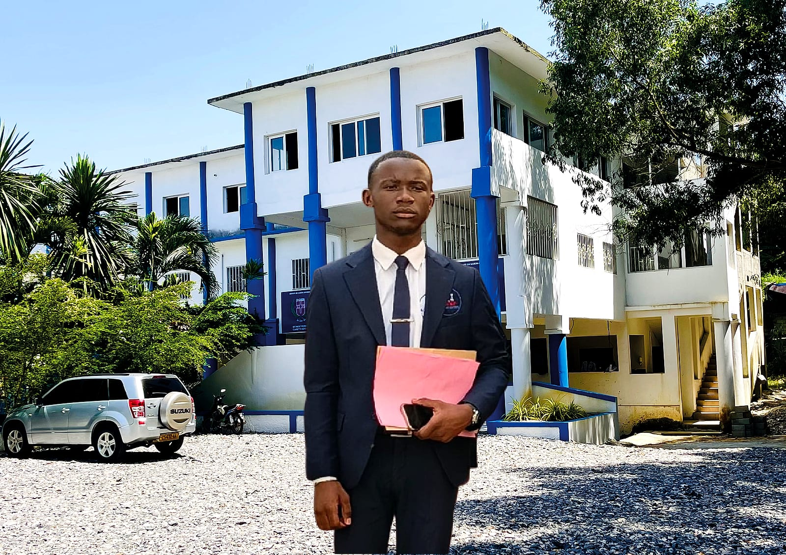
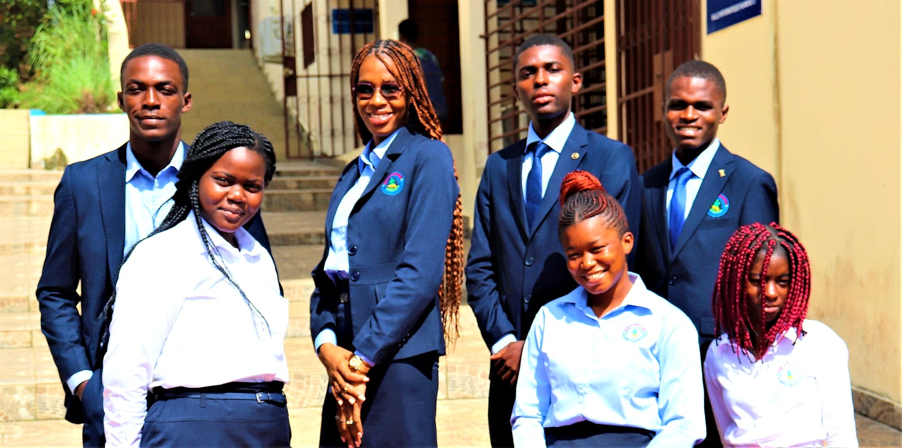
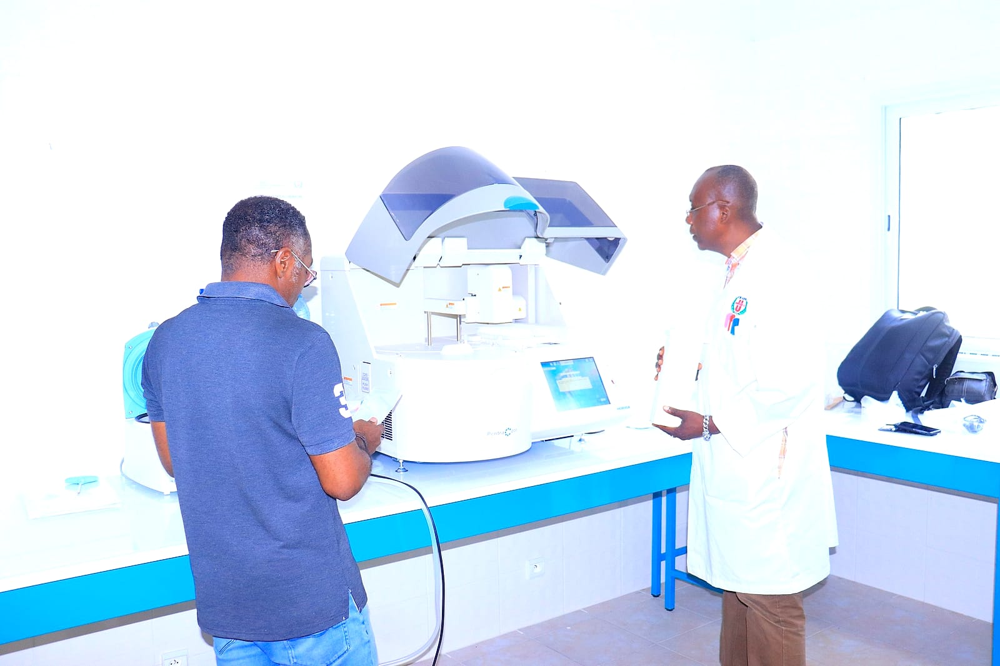
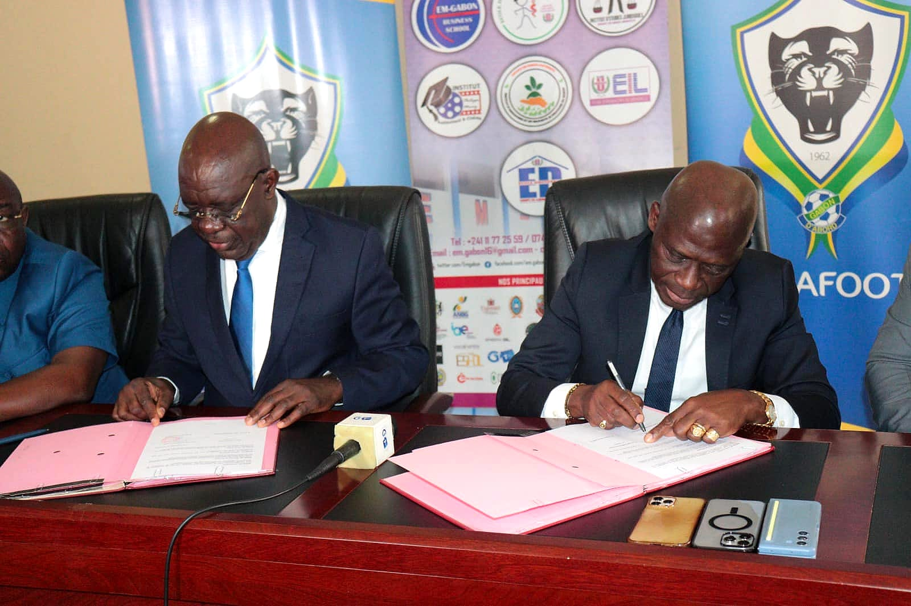
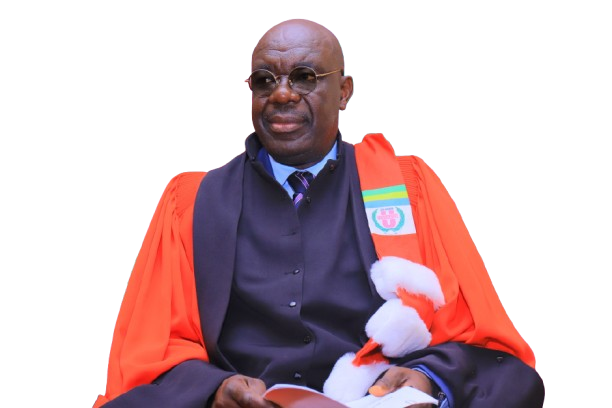
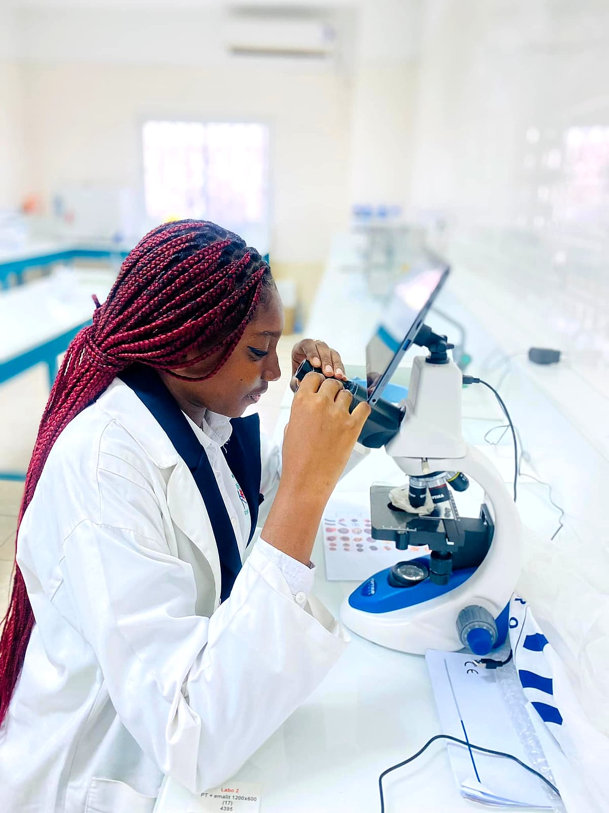

Accueil / L'Université
Établissement privé d'enseignement supérieur, de recherche scientifique et de formation professionnelle, fondé en 2010 et reconnu par l'État gabonais.
Créée en 2010 sous le nom d'École de Management du Gabon (EM-Gabon), l'institution a acquis le statut d'université en 2018. Elle est reconnue par l'État gabonais (décrets n° 0071/PR/MESRSIT et n° 0072/PR/MESRSIT) et accueille ses étudiants au Campus Mindoubé 2, à Libreville.
En 2024, une évaluation officielle portant sur 22 critères l'a classée parmi les deux meilleurs établissements privés d'enseignement supérieur du Gabon.




En choisissant EM Gabon-Université pour vos études supérieures, sur place au Gabon, vous vous inscrivez dans notre vision : construire un cadre d'études aux standards des meilleurs établissements du continent, pour une université gabonaise plus performante et plus conquérante.
Notre université privilégie des approches pédagogiques dynamiques et innovantes, développe les compétences numériques, entrepreneuriales et de communication, et place l'étudiant au centre de ses préoccupations.
Enseignement supérieur, formation professionnelle et recherche scientifique au service de la formation de l'élite gabonaise, en harmonie avec les priorités nationales.
Apparaître, à moyen terme, dans les classements des meilleures universités africaines, en tissant des liens étroits avec le monde socio-professionnel.
Développement durable et responsabilité sociétale : pratiques écologiques sur le campus et conscience citoyenne pour toute la communauté universitaire.
Une administration au service des étudiants, de la Présidence aux services.
Pré-inscription en ligne, dépôt du dossier à la Direction de la Scolarité et de la Mobilité.
Enseignements LMD, laboratoires, conférences et plateforme de cours en ligne.
Stages chez nos partenaires : hôpitaux, instituts de recherche, administrations et entreprises.
Soutenance devant jury, remise des diplômes et poursuite en Master ou Doctorat.

Institutions, hôpitaux, fédérations et universités qui accompagnent nos étudiants.
Découvrez nos 75 filières et déposez votre pré-inscription en ligne.